2 Week 2
3 Diversity
The state of COVID-19 in this time last year (2022):
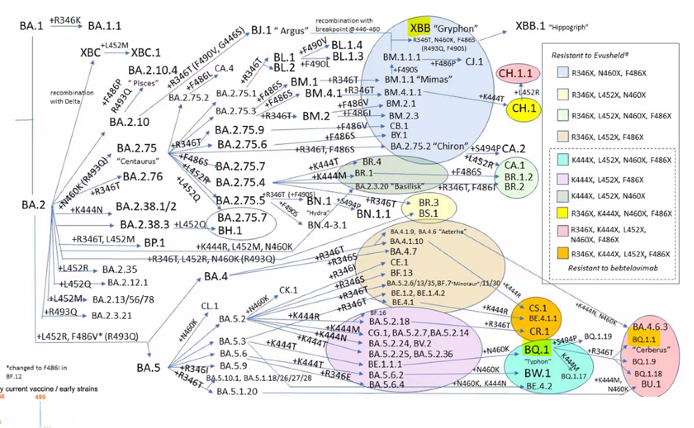
Name some Is plasmodium more related to humans or bacteria? Humans! Because it’s eukaryotic.
- Clostridium — a bacteria.
- Yersinia (including pseudo-tuberculosis, black death, etc.)
- Candida aurus
- Prions — infectious by virtue of their shape
- Cause of bovine encephalitis, kuru, etc
- Amoeba
- Ascaris worm
- Baltic fishtape worm gets to 30 feet in length
Basically everything except archaea have been found to be infectious.
Getting the biology right matters. Not only to avoid needless antibiotic prescriptions. Bacteria, viruses, protozoa are very different!
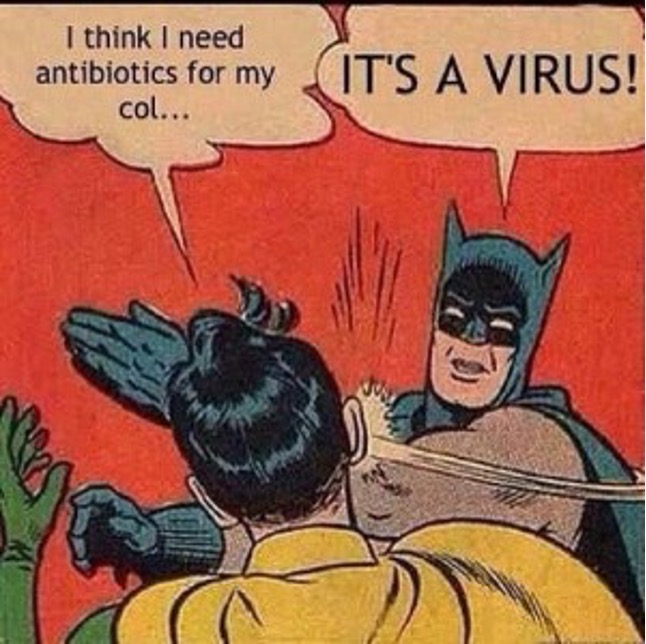
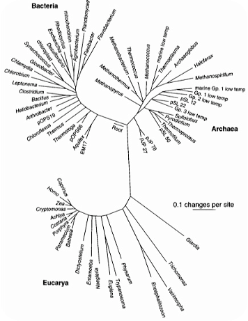
Everything that can be seen with the naked eye is contained in the three nodes labeled: homo, coprius (fungi), zea (maize).
Why are archaea not pathogenic?
Gill, E., & Brinkman, F. (2011). The proportional lack of archaeal pathogens: Do viruses/phages hold the key? BioEssays, 33 (4), 248-254 DOI: 10.1002/bies.201000091
(Bill doesn’t necessarily agree with the think-piece above, just included to show you can write such a think-piece).
3.1 Bacteria
- Unicellular*
- Circular genome, no nucleus*
- Bacteria multiply by binary fission
- Extraordinary diverse variation in gene content allows flexibility
* The exceptions to unicellularity is that many can grow in chains or complex biofilms with properties linked to virulence. Also, some linear genomes known. Also contain plasmids
Borellia burgdorferi has linear chromosomes.
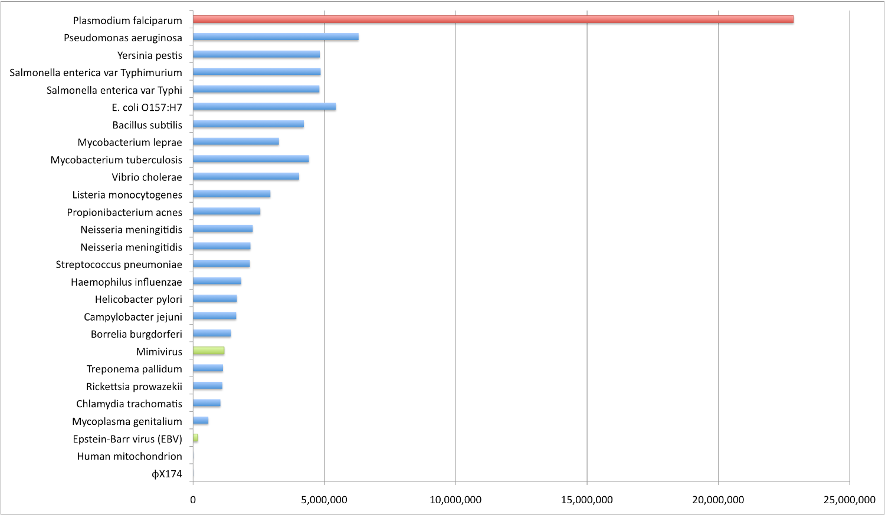
In 2002, Welch et al showed that three strains of E coli only had 39% of genes shared. This variation explain why some strains cause diarrhea vs. other symptoms.
https://c2-d2.github.io/hanage-lab/The-Amazing-Accessory-Genome-in-S.pneumoniae/
In general, free-living organisms have larger genomes because they experience a wider variety of conditions.
Pathogens, on the other hand, which only rely on a single species, tend to have smaller genomes because they’ve often outsourced all possible functionalities.
Obligate endosymbionts (chlamydoffila/chlamydia) have the smallest genomes of all. Often, one can see that their genes have even been copied into the eukaryotic host.
3.2 DNA transfer, recombination
DNA may be transmitted between lineages in bacteria via conjugation, transduction, transformation.
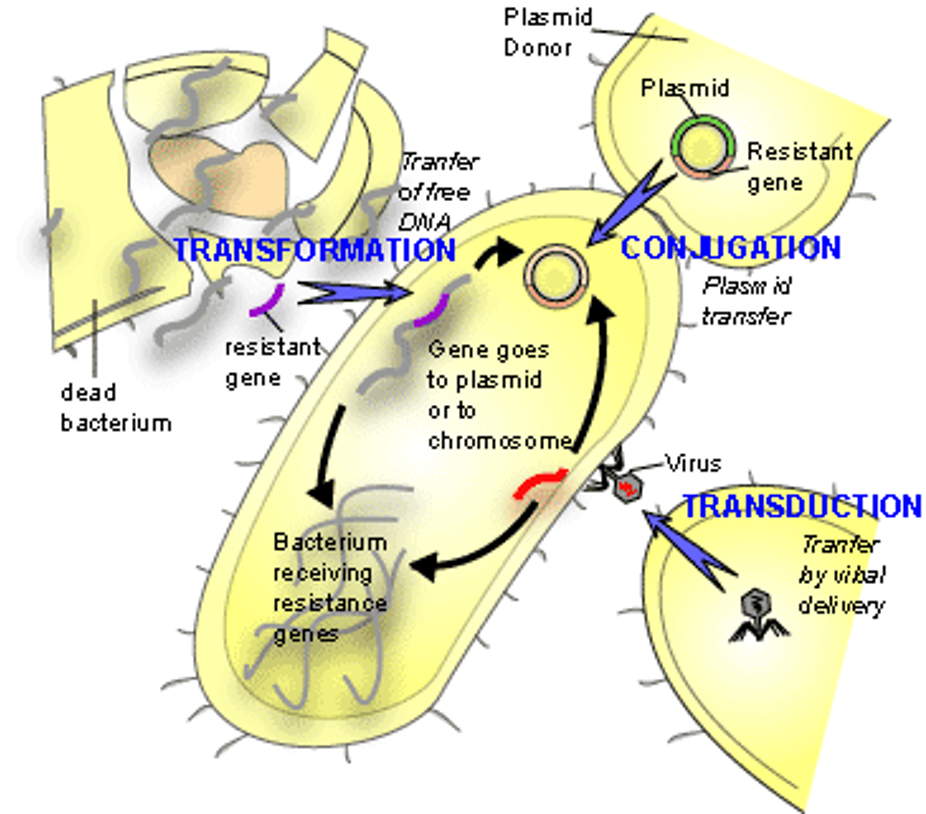
- Conjugation: Picking up a plasmid
- Transduction: Transfer via viral delivery
- Transformation: sucking up DNA from the environment
Why suck up DNA from the environment?
Making DNA is quite energy costly, so sucking up DNA can be food.
- Genome hypermobility by lateral transduction, Science 2018
- Evolution via recombination: Cell-to-cell contact PLoS Genetics
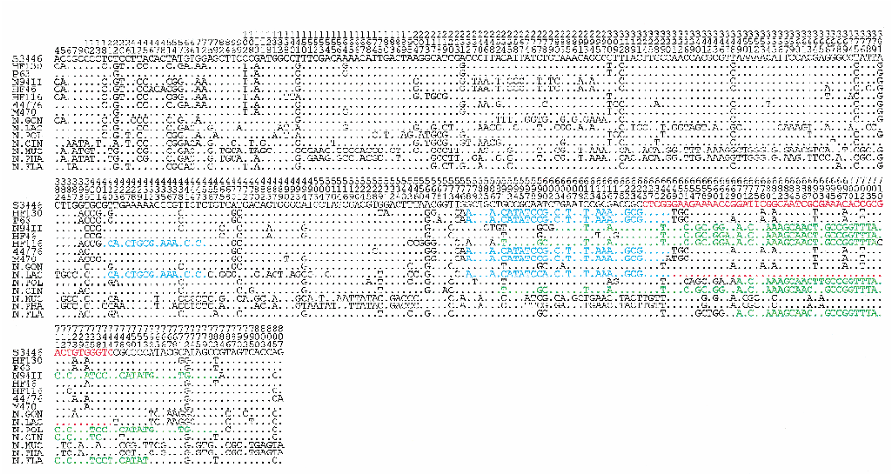
These DNA codes can contain features for antibiotic resistance.
People use the word ‘clonal’ to describe how much recombination happens.
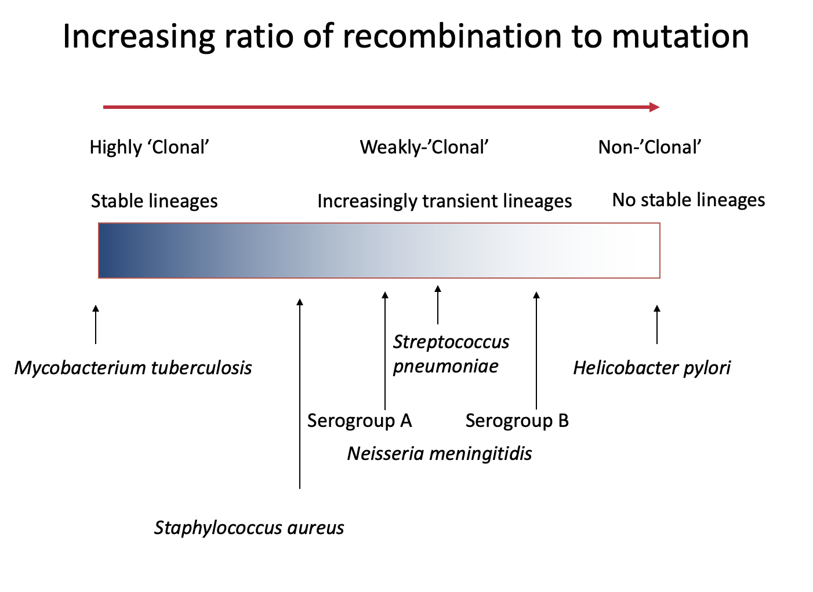
The result is that we can’t resolve deep evolutionary relationships. This raises questions about what ‘species’ are.
Example: When studying a lineage in about 2014, about 40% of its genome had been replaced by recombination.
Instead of a tree of life, we have a temporal network.
Jim Mallet with David Reich showed that butterfly species in the Andes have exchanged gene sequences that determine the colors and patterns on their wings because one of them tastes bad and one of them doesn’t. (Mimicry).
3.2.1 Summary of Bacteria
- Most bacteria that do come into contact with humans only act as ‘accidental’ pathogens (0.36% of known can cause disease).
- Very few are obligate, human-specific
- Inverse relationship between niche specialization and genome size
- Mr. Potato head
- Small genome species: highly specialized for existence within a particular host niche
3.3 Viruses
Since 2013 the International Committee on the Taxonomy of Viruses has said:
- ““A [viral] species is a monophyletic group of viruses whose properties can be distinguished from those of other species by multiple criteria”
- (like capsid structure, host range, enveloped or no among other things)
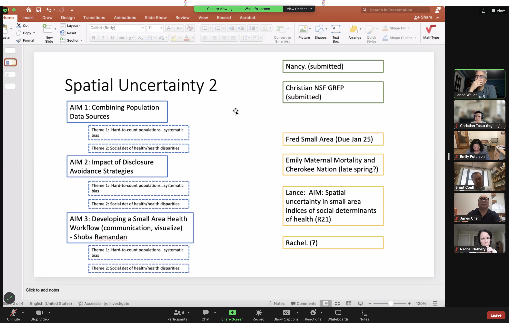
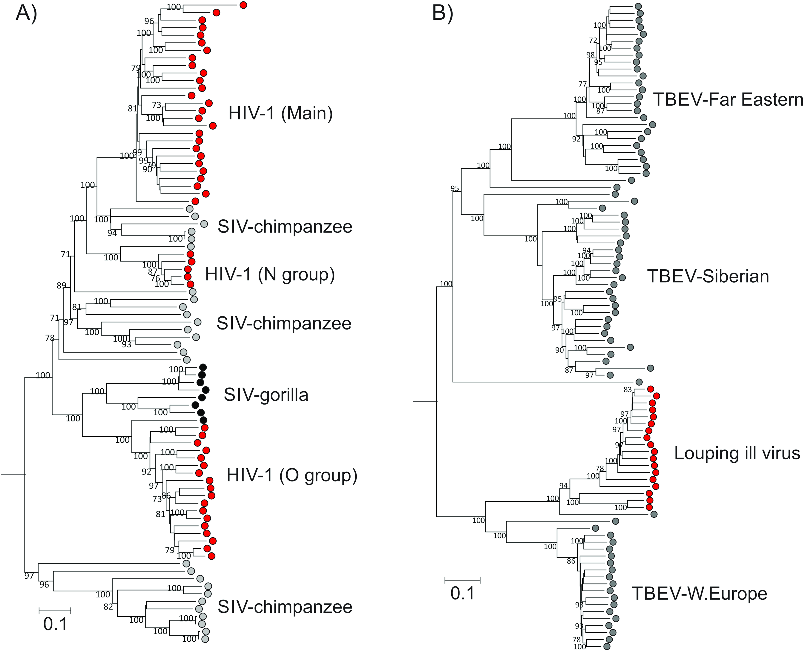
Viruses are 20-300 nm in diameter.
“For a dead thing, they make a lot of trouble” —Appropriately said on Halloween
They get others to do things for them, much like PIs or journals.
Most of the estimated \(10^{31}\) viruses on Earth are phages that infect bacteria (they kill between 4–50% of the bacteria produced every day in the environment)
Bill says that the Lancet published a letter claiming SARS came from space. He and others wrote eagerly awaiting for hard evidence of its implications: that there is eukaryotic life in space capable of sustaining viral evolution.
Viruses are:
- metabolically inert,
- replicate only within the cells of living hosts
- Have a RNA or DNA genome, a protein coat, and, in more complex types, a surrounding envelope.
RNA vs. DNA: * Both nucleic acids – ribonucleic and deoxyribonucleic * We use double stranded DNA, the double helix * But viruses are much more variable
Viruses typically have high mutation rates — especially RNA viruses
- RNA is less stable than DNA
- A single strand is less stable than a double strand
- The things that copy RNA can’t correct their mistakes
- Retroviruses use RNA, but copy it to DNA (using reverse transcriptase)
- All these things mean that viruses generate variation quickly
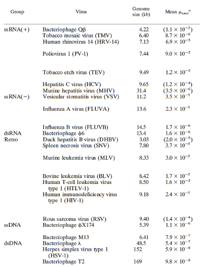
Each genome can only accumulate a limited amount of change per generation, thought to be due to not-coincidental. If something mutates too slowly, there’s not sufficient variation for adaptation and evolution to occur. If there’s too much, then there’s potential for a mutational meltdown.
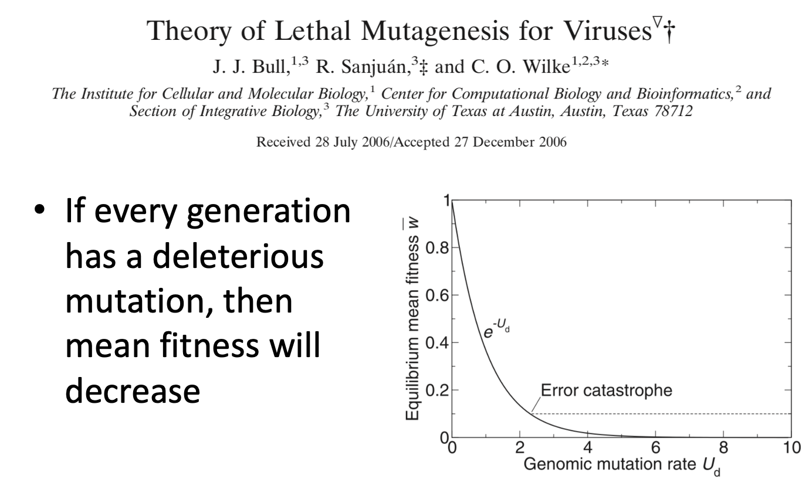
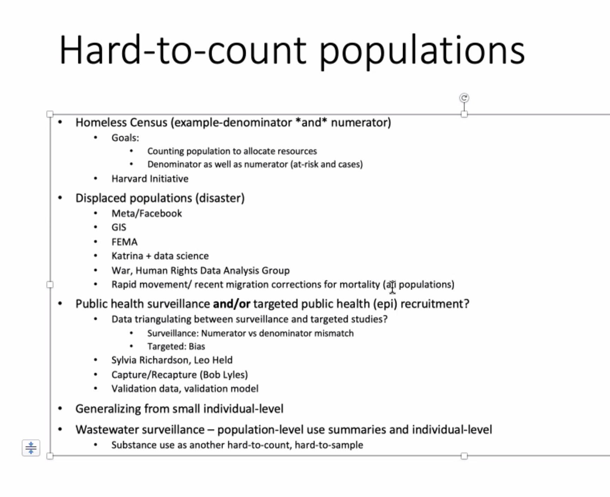
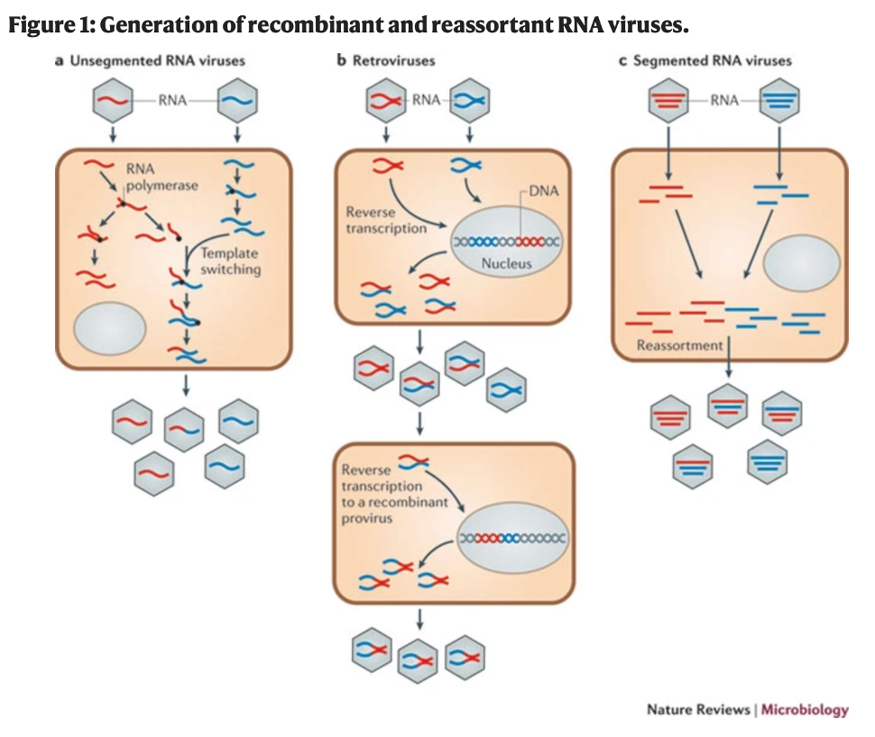
Because influenza has 9 “chunks of genes” (chromosomes?) that are already segmented — so you don’t need anything special for recombination. If one cell gets infected by multiple flu viruses, the segments can recombin. Each segment codes for different proteins that are part of the virus.
We call this antigenic shift.
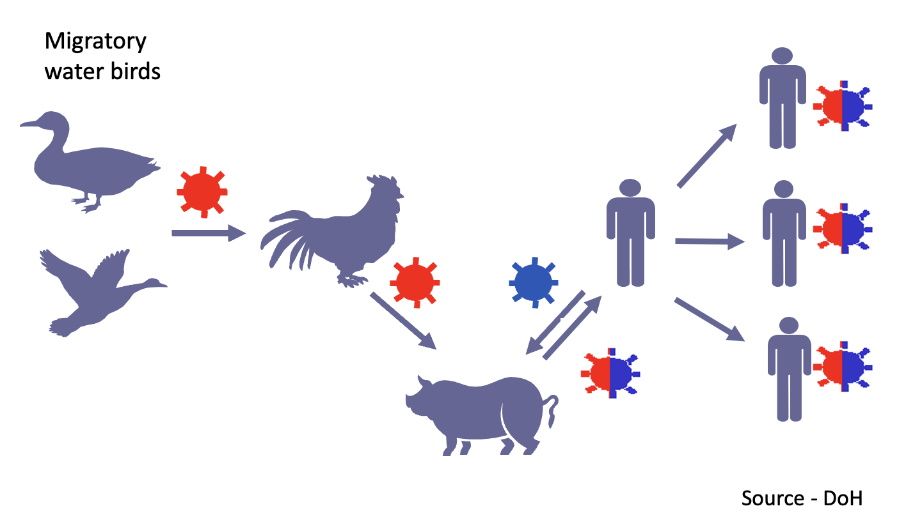
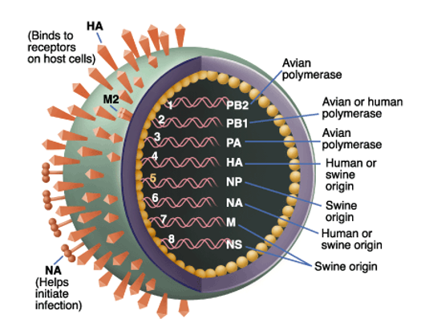
How can we be sure something is a swine virus? We can see that it’s picked up genetic material from other swine viruses.
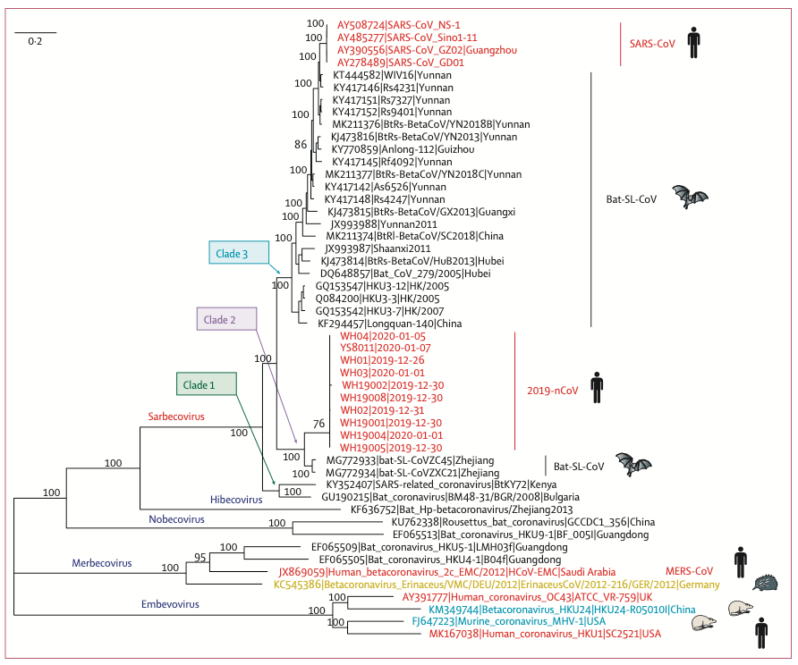
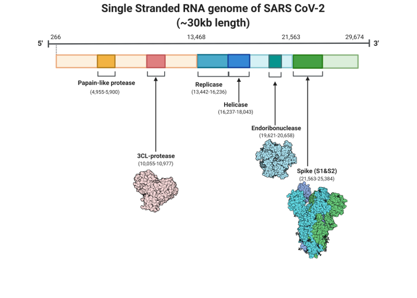
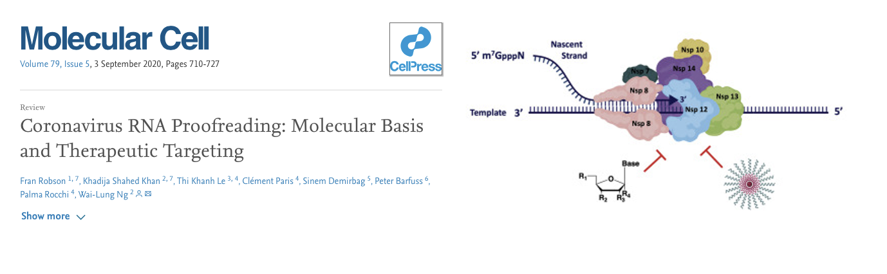
Recall, Bill’s definition: Change in allele frequency.
First published set of sequences from an immunocompromised host.
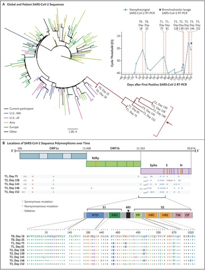
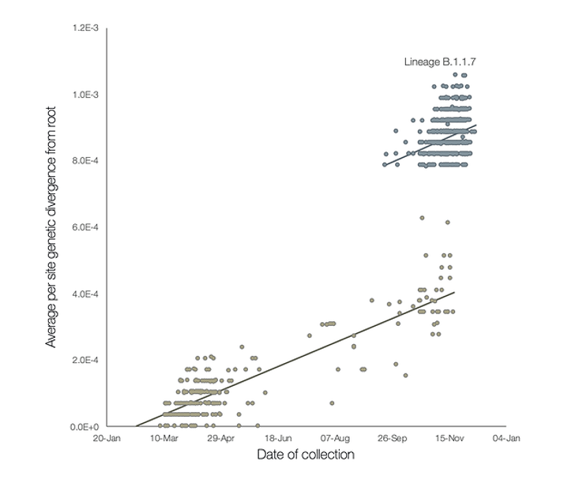
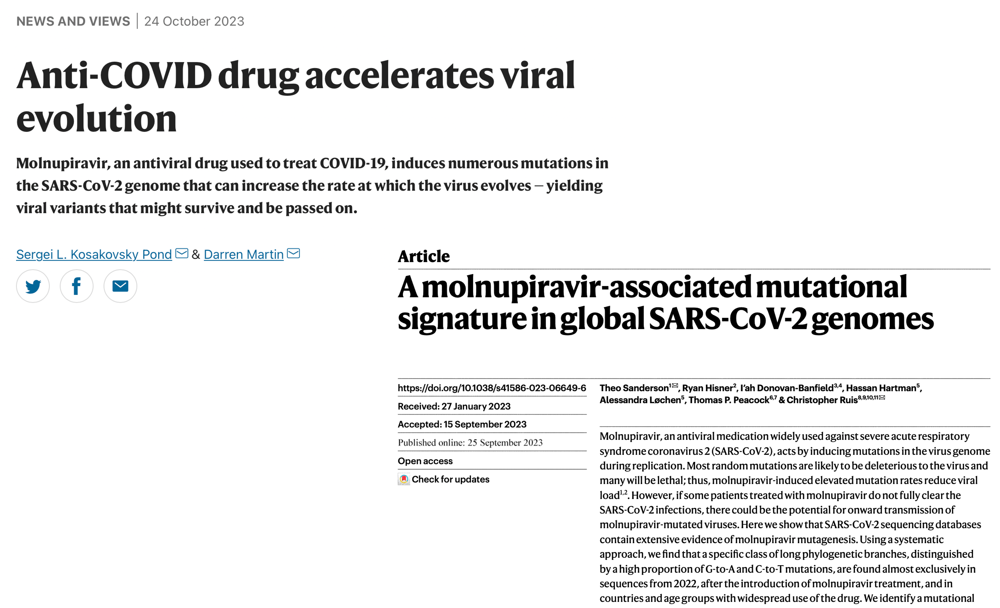
3.4 Eukaryotic
Like us in that their DNA is packaged with proteins in chromosomes And they can reproduce sexually, not that they always do.
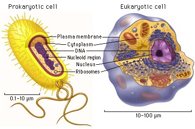
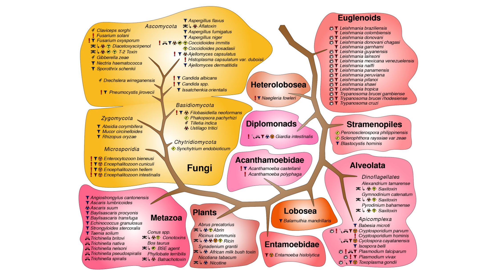
Fungi, Algae, Protozoa, and Helminthes. Eukaryotic pathogen life forms are clearly dominated by the fungi and protists. Protist species are responsible for globally important diseases such as the malaria-causing Plasmodium species and the Leishmania and Trypanosoma species that cause significant mortality in the developing world.
Among the 20 most frequent microbial causes of death worldwide, six are eukaryotic.
“Two fold cost of sex” — many theories, Bill’s favorite being that it’s an adaptation to mitigate pathogens.
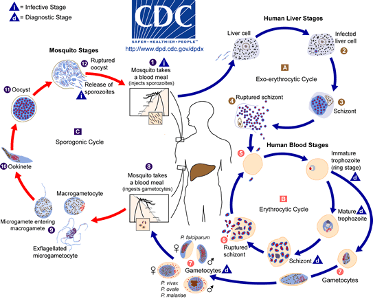
Typically evolution goes:
Mutation -> Variation -> Selective Pressure -> Adaptation
Humans generate diversity in our immune function and response through combinations of diverse loci in the Major Histocompatibility Complex.
Similar strategies are followed by some parasites.
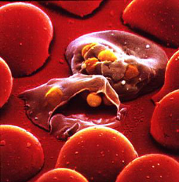
Plasmodium have var genes. These are involved in attachment to red blood cells. About ~60 of them. One is expressed at a time, and exactly which varies during infection. Further variation is generated via recombination.
Trypanosomes — variable surface glycoproteins
- These are the cause of sleeping sickness and Chagas disease.
- Trypanosomes are coated in a highly variable glycoprotein.
There are >1000 vsg genes in each parasite (!)
3.5 Fungi
Yeast infection (candidiasis) is caused by the yeast Candida albicans.
Apergillus found in individuals with lung disease or cancer that have been exposed to fungal spores.
Candida auris is a fungal pathogen, with antimicrobial resistance, which is increasingly important.
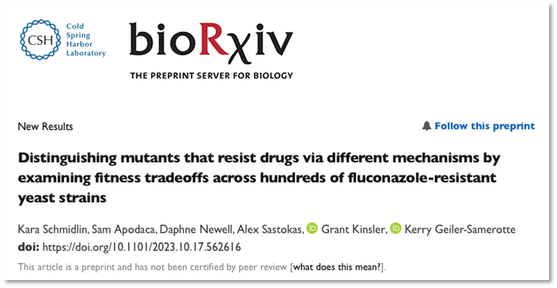
3.6 Strategies for dealing with immunity
- Rapid mutation – RNA viruses
- Antigenic variation – parasites and bacteria
- Recombination – used throughout life (and viruses to boot)
For example, Neisseria meningitis has maintained less antigenic shift than Neisseria gonoccocus because droplet transmission can happen relatively quickly. On the other hand, gonorrhea has to stick around until it’s transmitted.
3.7 Summary
- With the exception of Archaea* all parts of the tree of life include pathogens
- Bacteria – diverse, Mr potato heads
- Viruses – slimmed down, can have high mutation rates
- Eukaryotes – complex life cycles, capable of sexual reproduction.
*Although archaea are part of the microbiota.
3.8 Discussion
- Why haven’t we identified the host of ebola?
- Well, where do viruses get sampled? Where there are labs. Where there are resources. Where there are humans.
- What do you think of the Global Virome Project? Is it a good use of resoures? https://www.globalviromeproject.org/
- It’s useful for helping to elucidate the variation in viruses
- Shining the flashlight into the darkness
4 Transmission Routes, Adaptation, and Emergence
If a person with anthrax boarded a transatlantic flight, how many of their fellow passengers would you expected to be infected on arrival?
Anthrax is a bacillus, ancillus anthrasis, which produces a toxin.
The answer is nil because it does not transmit via humans — it transmits via spores.
Even the most deadly form of anthrax, which people have spent years trying to make transmissible, isn’t transmissible.
What is adaptation? A fitness advantage playing off the existing variation. When existing variation is selected and the resulting is more likely to survive, that thing that emerges and that process are adaptation — both of them.
How do pathogens adapt?
- What are they adapting to?
- What are obstacles to adaptation?
- How do they overcome these obstacles (if they do)?
What do you think is being selected at different points?
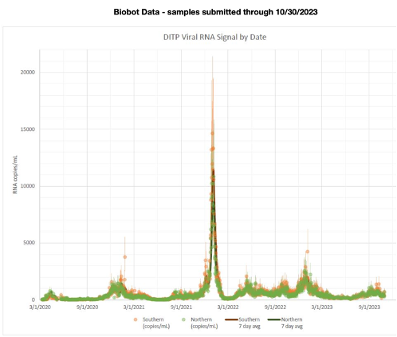 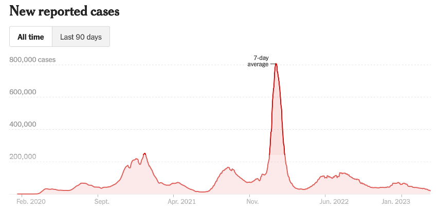
Simultaneously:
- Novelty in the spike protein, and
- also achieving the functionality of infections
D614G is an infection point developed very early — famous for increasing the affinity of the spike to the receptor. Alpha and delta also had similar mutations. More and more people developed immunity to the original virus. Immune evasion and immune escape are key. After that, the peak was really slow so it built up a lot of immunity. This poses a big survival pressure.
Do we think that if omicron infected such a large proportion, would this drive more variation or diversity in subsequent lineages? Actually, we’ve mostly seen omicron sub-lineages recently rather than distant lineages.
Early stage adaptation is all about host infectivity, and later on is all about immune evasion.
Shout-out some things that are being adapted:
- Infectiousness
- The virus’s ability to infect or establish in a person
- Reproductive number
- Affinity of the receptor, receptor-binding
- Immune Evasion
- From vaccine and infection acquired immunity (Convalescent, vaccine induced)
- From B-cells, from T-cells
- From vaccine and infection acquired immunity (Convalescent, vaccine induced)
- Virulence / symptoms
- Though symptoms also come from immune response
- Generation interval; generation time
- Time-to-infectiousness
- Location of viral replication
- Colder means closer to the end of the nose
- Mode of transmission
What matters particularly at the start? Transmissibility; infectivity; generation time. What doesn’t matter at the start? Immune evasion — because everyone is susceptible. The advantage of immune evasion hardly exists.
Does immune evasion always mean adaptive immune evasion? Because isn’t the first step immunity when there’s animal to human transmission?
\(R_0\) of wild type was around 3, \(R_0\) of alpha was around ~4.5, delta was around ~6 (replicated very quickly)
For delta, a large number of viruses were there before the immune system could catch it — so it was able to infect and transmit from individuals who had immunity, without any of the “rinky-dinky stuff that omicron has.”
What’s selected for later? Immune evasion.
What’s selected for now? We have lots of immunity, lots of types with immune evasion,
Who has heard of “HV.1”? HV.1 is derivative of EG5 which just became the main derivative Mutation in 452, better able to attach to cells. This is similar to what made XBB better than 1Q.1.
Importantly, one cannot have an ever-increasing \(R_0\). Like, an \(R_0\) of 8 vs. 9 is not as much of a difference between \(R_0\) of 2 and 3. In other words, past a certain point, “everyone gets infected,” whereas at the lower boundaries we have differences in the pace of domination.
According to Plague Inc, routes of transmission:
- Zoonoses:
- Birds, rodents, domestic animals
- Mosquitos
- Blood
- Water
- Air
- Fecal-oral
- Aerosol (fomites)
- Body Fluids/STDs
- Nosocomial
- Vector
- Foodborne
Despite the unrealism of this, there are overlaps and the boundaries of these things are not absolute.
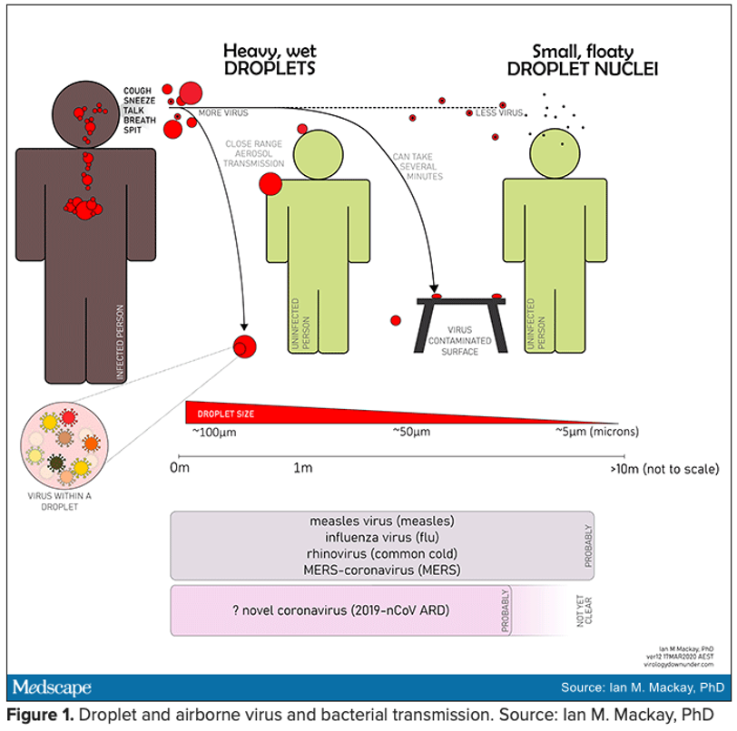
From https://www.medscape.com/viewarticle/930797
Can you think of a disease that has changed its transmission route?
Depends if we’re allowed to think about diseases with changes in its host
- Avian influenza is fecal-oral changed to respiratory
- Mpox
- Hepatitis in blood transfusions from STDs
- Zika and Mpox
4.1 Zoonoses
Often called a host jump or a host switch (or emergence for a jump into humans).
Distinct from spillover, which is transmission from a reservoir species into another species in which the pathogen does not normally circulate.
A zoonosis is a disease that can be transmitted from animals to humans.
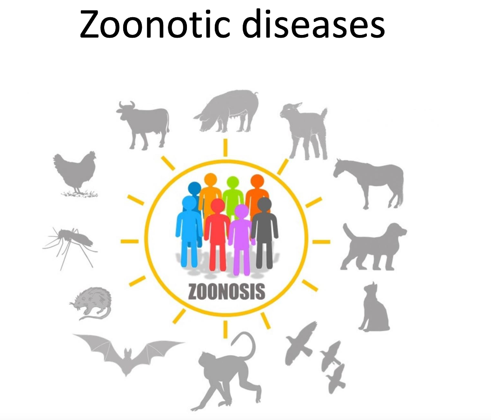
Anthroponoses is when humans can infect animals.
List zoonotic diseases that are known to jump or have jumped from animals to humans:
- Avian flu
- Ebola
- Swine flu
- Plague
- Malaria
- HIV
- Yellow fever
- Coronavirus
- Hantavirus
- Measles came from cattle
- Bovine encephalitis
- Hemoragic fevers
- Rabies
- Nipah
- Chagas
- Parasites
There is a trade-off refers to the inability to optimize multiple traits simultaneously. Impossible to be well-adapted to
Lots of zoonoses, but not that many cases where it’s become fully transmissible and established in new species. Flu, HIV, COVID, plague.
Adaptation and host switching is not the norm.
Off-the-shelf: adaptive mutations occur in the animal reservoir, before spillover.
Tailor-made: adaptive mutations occur and are selected following spillover.
We think off-the-shelf is more common.
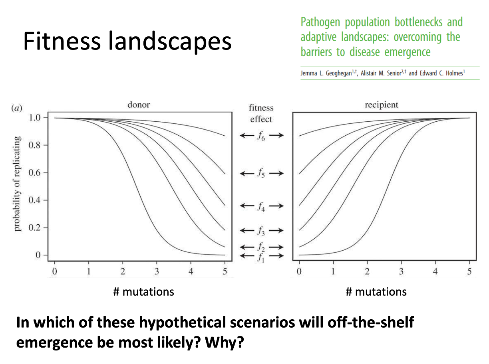
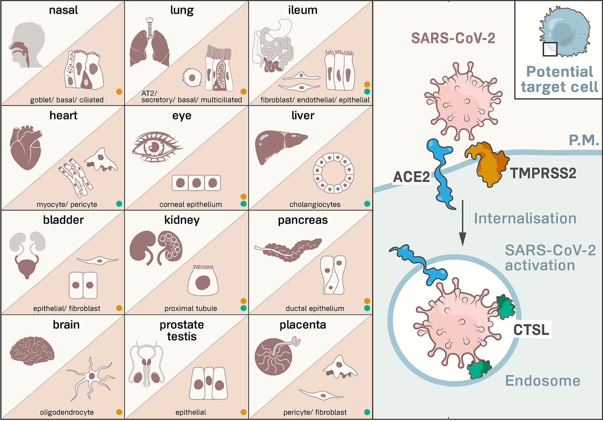
Host jumps can be off-the-shelf (adaptive mutations occur before spillover) or tailor-made (adaptation occurs after spillover).
Off-the-shelf emergence is limited by the probability of the necessary mutations appearing and surviving in the reservoir population.
Fitness landscapes can be very different reservoir and humans representing a tradeoff.
The biggest risk for emergence are generalists because generalists can become specialists.
4.2 Population Size
Population size is a particularly important and under-appreciated dimension for emergence. How large is the population size in the new host? This determines opportunity for adaptation.
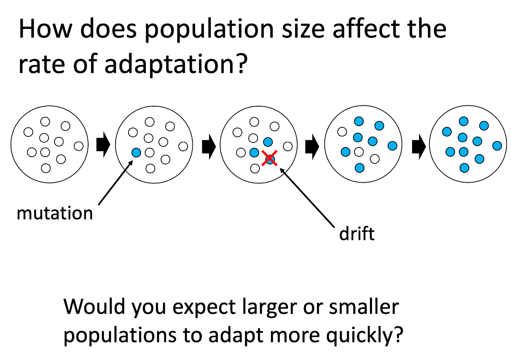
Larger populations tend to adapt more quickly. Smaller populations are at risk of losing beneficial adaptations by chance.
Strong (narrow) bottlenecks reduce population size more than a weak (wide) bottlenecks. The founder effect occurs when a new population is “founded” by a small number of individuals whose allele frquencies may differ from the source population.
Types of bottlenecks viruses experiences:
- Transmission
- Loss of host population
- Epidemic dynamics (e.g., bottlenecks in the winter)
- Selection
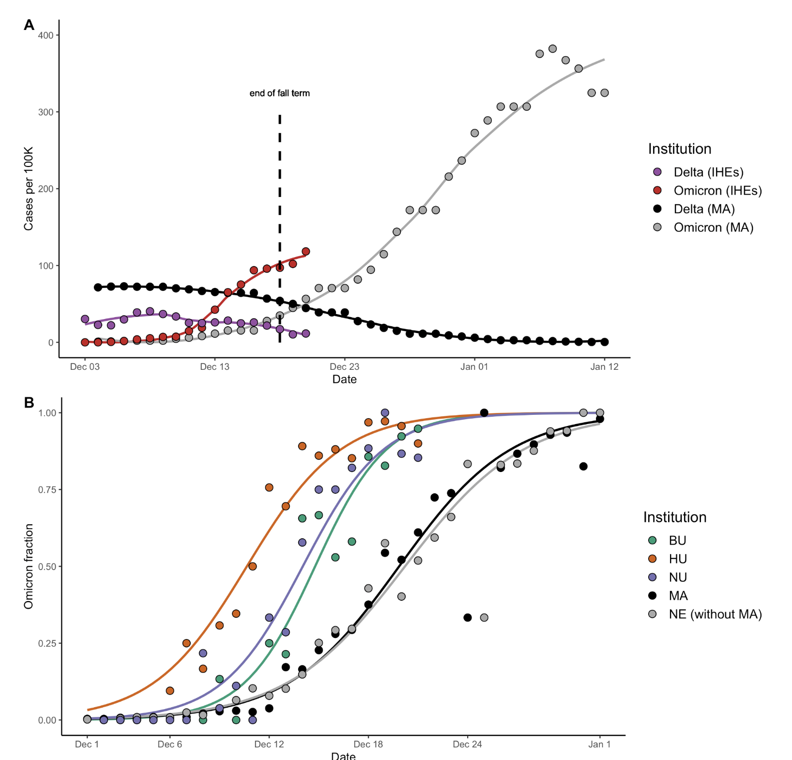
Petros, Turcinovic et al 2022
https://www.medrxiv.org/content/10.1101/2022.01.27.22269787v1
Effective population size \(N_e\): the population size that would give the same genetic diversity under idealized conditions.
- Constant population size
- Random mating
- Neutrality (no selection)
\(N_e\) is the harmonic mean population size
\[N_e = t(\sum_{i=1}^t \frac{1}{N_i})^{-1}\]
Skewed by small numbers, meaning \(N_e\) is very sensitive to bottlenecks.
4.2.1 Rough \(N_e\)s for some famous things:
- E coli ~\(10^9\)
- Influenza 500
- Measles 4000
- Humans 10,000
For influenza, because of the yearly sweeps.
For humans, because of the common ancestors leaving Africa relatively recently.
- Fraser et al 2009
- Bedford et al BMC evol Biol 2011
- Takahata Mol Biol Evol 1993
4.3 Bottlenecks and Host Jumps
Bottlenecks reduce diversity and slow adaptation.
Strong bottlenecks have a greater effect than weak bottlenecks.
What affects the size of a transmission bottleneck?
- Abundance in the donor host
- Route of transmission
- Susceptibility in recipient host
- Fitness distribution of the transmitted population
4.4 Review
Larger populations adapt more rapidly. Bottlenecks reduce genetic diversity and slow adaptation. The effective population size \(N_e\) is the size of an idealized population that would have the same amount of genetic diversity.
Bottlenecks may substantially reduce \(N_e\).
Remember that most zoonoses are weakly transmissible in humans.
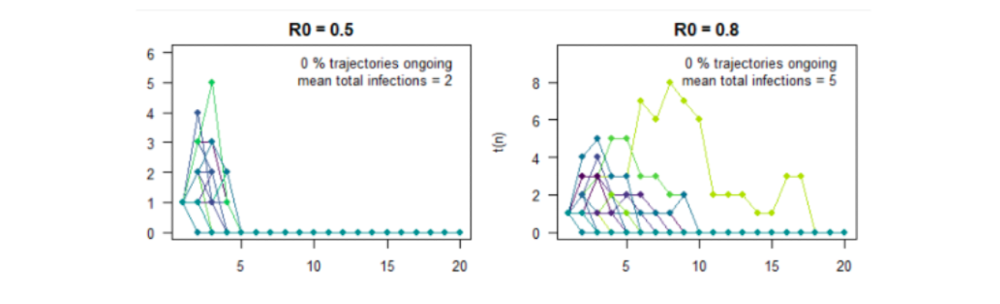 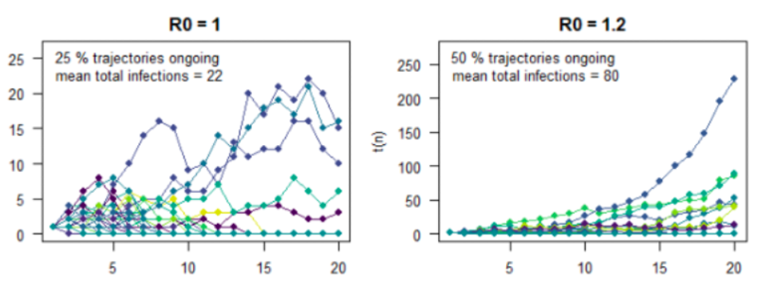
Evolutionary rescue is improving the reproductive rate before going extinct.
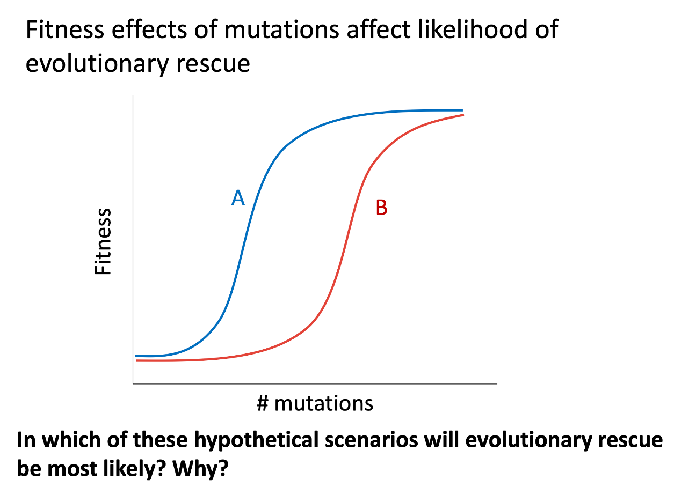
Example: Original SARS may have almost been rescued due to a deletion of ORF8.
One reason is that there already exist large diversity in bacteria.
4.5 One Dose or Two
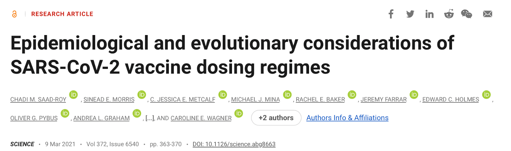